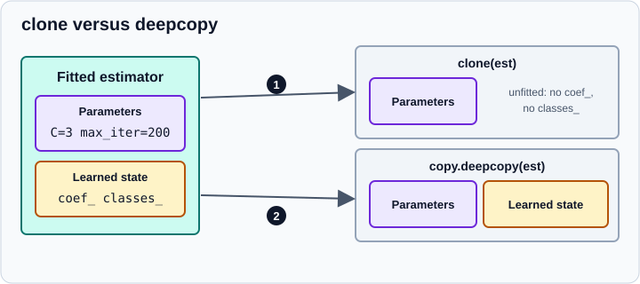

get_params, set_params and clone
|
This content was generated with the assistance of AI and should be verified against the official documentation before being relied on in production. |
Every scikit-learn estimator can describe its own configuration (get_params), have it changed after creation
(set_params) and produce a fresh unfitted copy of itself (clone). These three operations look minor, but they are
what makes pipelines, cross-validation and hyperparameter search work: a search clones the estimator for every fold and
sets different parameters on each clone, addressing parameters of steps inside a pipeline by name. This page explains the
three operations, the naming convention for nested parameters, the rules a constructor must follow so that they work, and
the pitfalls. The conventions of the rest of the interface are in
The Estimator API.
The page targets scikit-learn 1.9 and was checked in October 2026. Examples target Python 3.13 or 3.14 and were run on Python 3.13. Every example was run with Python 3.13.18 and scikit-learn 1.9.1 and the output shown is the real output.
Parameters versus learned attributes
An estimator has two kinds of state. Parameters are the arguments of the constructor: they describe how the
algorithm behaves (C, max_iter, n_estimators, random_state). Learned attributes end in an underscore and are
created by fit (coef_, classes_). Only parameters are returned by get_params, set by set_params and copied by
clone.

get_params
get_params(deep=True) returns a dictionary that maps each constructor argument to its current value:
from sklearn.linear_model import LogisticRegression
clf = LogisticRegression(C=0.5, max_iter=200)
print(clf.get_params()){'C': 0.5, 'class_weight': None, 'dual': False, 'fit_intercept': True, 'intercept_scaling': 1, 'l1_ratio': 0.0, 'max_iter': 200, 'n_jobs': None, 'penalty': 'deprecated', 'random_state': None, 'solver': 'lbfgs', 'tol': 0.0001, 'verbose': 0, 'warm_start': False}
Two details of this 1.9 output are worth reading. The penalty parameter shows the placeholder 'deprecated': it was
deprecated in 1.8 in favour of l1_ratio (0 for L2, 1 for L1, in between for elastic net) together with C, and
multi_class no longer exists. Printing the parameters is also the quickest way to see which defaults a version
uses, which matters because defaults change between releases.
For simple estimators deep makes no difference. For meta-estimators (estimators that contain other estimators)
deep=True also returns the parameters of the contained estimators, with names built from the name of the parameter that
holds the estimator, two underscores and the inner name. This is the mechanism behind the step__parameter syntax:
from sklearn.pipeline import Pipeline
from sklearn.preprocessing import StandardScaler
from sklearn.svm import SVC
pipe = Pipeline([("scale", StandardScaler()), ("model", SVC())])
print(sorted(pipe.get_params()))
print(sorted(pipe.get_params(deep=False)))['memory', 'model', 'model__C', 'model__break_ties', 'model__cache_size', 'model__class_weight', 'model__coef0', 'model__decision_function_shape', 'model__degree', 'model__gamma', 'model__kernel', 'model__max_iter', 'model__probability', 'model__random_state', 'model__shrinking', 'model__tol', 'model__verbose', 'scale', 'scale__copy', 'scale__with_mean', 'scale__with_std', 'steps', 'transform_input', 'verbose'] ['memory', 'steps', 'transform_input', 'verbose']
With deep=False only the pipeline’s own parameters appear; with deep=True every parameter of every step is added
under the name of the step (model__C, scale__with_mean), and the steps themselves appear as parameters too
(model, scale). The names come from the first element of each (name, estimator) pair. make_pipeline generates names
from the lower-cased class names (standardscaler, logisticregression), and ColumnTransformer uses the names you give
its transformers. Nesting can be several levels deep: columntransformer__num__imputer__strategy reaches a parameter of
an imputer inside a numeric branch of a column transformer inside a pipeline. Pipeline.named_steps and
ColumnTransformer.named_transformers_ give access to the objects.
set_params
set_params(**params) changes parameters in place and returns the estimator itself, so it can be chained. It accepts
exactly the names that get_params returns, including nested ones:
from sklearn.linear_model import LogisticRegression
from sklearn.pipeline import Pipeline
from sklearn.preprocessing import StandardScaler
from sklearn.svm import SVC
clf = LogisticRegression(C=0.5, max_iter=200)
clf.set_params(C=2.0)
print(clf.C, clf.set_params(tol=1e-3) is clf)
try:
clf.set_params(Cc=1) # a typo
except ValueError as error:
print(str(error).split(" Valid parameters")[0]) # the list of valid names follows
pipe = Pipeline([("scale", StandardScaler()), ("model", SVC())])
pipe.set_params(model__C=10, model__kernel="linear", scale__with_mean=False)
print(pipe)
pipe.set_params(model=LogisticRegression()) # replace a whole step
print(pipe.steps[-1])
pipe.set_params(scale="passthrough") # disable a step
print(pipe.steps[0])2.0 True
Invalid parameter 'Cc' for estimator LogisticRegression(C=2.0, max_iter=200, tol=0.001).
Pipeline(steps=[('scale', StandardScaler(with_mean=False)),
('model', SVC(C=10, kernel='linear'))])
('model', LogisticRegression())
('scale', 'passthrough')
A misspelled name raises ValueError and lists the valid names, so mistakes in a parameter grid fail at once rather than
being silently ignored. A step can be replaced as a whole by assigning an estimator to its name, and the string
"passthrough" (or None for some meta-estimators) turns a step off. Searching over such alternatives is a common idiom:
from sklearn.datasets import load_iris
from sklearn.model_selection import GridSearchCV
from sklearn.pipeline import Pipeline
from sklearn.preprocessing import StandardScaler
from sklearn.svm import SVC
X, y = load_iris(return_X_y=True)
pipe = Pipeline([("scale", StandardScaler()), ("model", SVC())])
grid = {
"model__C": [1, 10],
"model__kernel": ["linear", "rbf"],
"scale": [StandardScaler(), "passthrough"],
}
search = GridSearchCV(pipe, grid, cv=3).fit(X, y)
print(search.best_params_)
print(search.best_estimator_){'model__C': 1, 'model__kernel': 'linear', 'scale': 'passthrough'}
Pipeline(steps=[('scale', 'passthrough'), ('model', SVC(C=1, kernel='linear'))])
Because the grid is expressed through set_params, anything that is a constructor parameter can be searched, including
whole estimators.
Setting a parameter on a fitted estimator changes the configuration but not the learned attributes. The model is not
refitted and may become inconsistent with its parameters, so call fit again after set_params (with the exception of
warm_start, below).
clone
sklearn.base.clone(estimator, *, safe=True) creates a new estimator of the same class with the same parameters and
no fitted state. Parameter values are themselves cloned (a nested estimator is cloned recursively, other values are
deep copied). The result is unfitted, even when the original was fitted:
import copy
from sklearn.base import clone
from sklearn.datasets import load_iris
from sklearn.linear_model import LogisticRegression
X, y = load_iris(return_X_y=True)
fitted = LogisticRegression(C=3, max_iter=200).fit(X, y)
fresh = clone(fitted)
print(hasattr(fitted, "coef_"), hasattr(fresh, "coef_"))
print(fresh.get_params() == fitted.get_params(), fresh is fitted)
duplicate = copy.deepcopy(fitted)
print(hasattr(duplicate, "coef_"), (duplicate.coef_ == fitted.coef_).all())True False True False True True
Use clone when you want to train the same configuration again on other data (a new fold, a new random seed, another
dataset) and copy.deepcopy when you want an identical duplicate of a fitted model.
Why searches and cross-validation clone
GridSearchCV, cross_val_score, cross_validate and the other model selection tools never fit the estimator you pass.
They clone it for each candidate and each fold, so the original stays unchanged and the folds cannot contaminate each
other:
from sklearn.base import clone
from sklearn.datasets import load_iris
from sklearn.model_selection import GridSearchCV
from sklearn.svm import SVC
X, y = load_iris(return_X_y=True)
base = SVC()
search = GridSearchCV(base, {"C": [1, 10]}, cv=3).fit(X, y)
print(base.get_params()["C"], search.best_estimator_.C)
print(hasattr(base, "support_"), search.best_estimator_ is base)
print(search.cv_results_["params"])1.0 10
False False
[{'C': 1}, {'C': 10}]
base still has C=1.0 and is unfitted; best_estimator_ is a different object fitted on all the data with the best
parameters.
What clone does with different kinds of values
| Value | Result |
|---|---|
an estimator (also nested in a pipeline) |
cloned recursively, unfitted |
a list, tuple or dictionary of estimators |
each element cloned |
a number, string or |
copied |
a NumPy |
deep copied, so the clone starts from the same random state rather than sharing it |
any other object without |
|
from sklearn.base import clone
from sklearn.preprocessing import StandardScaler
try:
clone(1)
except TypeError as error:
print(error)
print(clone([StandardScaler(with_std=False), 3], safe=False))Cannot clone object '1' (type <class 'int'>): it does not seem to be a scikit-learn estimator as it does not implement a 'get_params' method. [StandardScaler(with_std=False), 3]
The safe argument is keyword-only. safe=False lets clone fall back to a deep copy for objects that are not
estimators; it is how clone copies parameter values that are plain data.
Frozen estimators keep their state
Sometimes you want a clone to keep the learned state, for example to wrap an already fitted model in
CalibratedClassifierCV. Since scikit-learn 1.6, FrozenEstimator does this: it wraps a fitted estimator, ignores
calls to fit and keeps its state when cloned. It replaces the old CalibratedClassifierCV(cv="prefit") idiom.
from sklearn.base import clone
from sklearn.datasets import load_iris
from sklearn.frozen import FrozenEstimator
from sklearn.linear_model import LogisticRegression
X, y = load_iris(return_X_y=True)
fitted = LogisticRegression(max_iter=200).fit(X, y)
copy_of_frozen = clone(FrozenEstimator(fitted))
print(hasattr(copy_of_frozen, "coef_"), (copy_of_frozen.coef_ == fitted.coef_).all())True True
FrozenEstimator uses the hook that every estimator can implement: __sklearn_clone__. clone delegates to
estimator.__sklearn_clone__() when the method exists (since 1.3), and an implementation must return an instance of the
estimator. Override it only for the rare estimator that must carry some state across clones; the default implementation
is the right one otherwise.
The constructor rules that make this work
get_params finds the parameters by inspecting the signature of the constructor and reading the attribute of the same
name from the instance. clone then builds a new object by calling the constructor with these values and checks that the
new object holds exactly the same values. So a constructor must:
-
take only keyword arguments with defaults (in scikit-learn itself only a few meta-estimators require the wrapped estimator);
-
store each argument unchanged in an attribute with the same name;
-
do nothing else: no validation, no conversion, no arithmetic, no creation of attributes ending in an underscore.
Validation is postponed to fit because set_params assigns the attributes directly and would bypass checks placed in
the constructor. A constructor that breaks the rule is detected by clone:
from sklearn.base import BaseEstimator, clone
class Bad(BaseEstimator):
def __init__(self, k=1):
self.k = k * 2 # wrong: modifies the parameter
class Good(BaseEstimator):
def __init__(self, k=1, tags=None):
self.k = k
self.tags = tags
def fit(self, X, y=None):
self.k_eff_ = 2 * self.k # the derived value is learned in fit and ends in _
return self
try:
clone(Bad(k=3))
except RuntimeError as error:
print(error)
good = Good(k=3, tags=["a"]).fit([[0]])
print(good.get_params())
print(hasattr(good, "k_eff_"), hasattr(clone(good), "k_eff_"))Cannot clone object Bad(k=6), as the constructor either does not set or modifies parameter k
{'k': 3, 'tags': ['a']}
True False
Mutable arguments (lists, dictionaries) should not be modified in place: copy them before changing them, and prefer
immutable values such as tuples. This is also why meta-estimators clone the estimator they receive before fitting it.
sklearn.utils.estimator_checks.check_estimator verifies these rules for custom estimators.
Related behaviours and pitfalls
-
random_stateis a parameter.clonekeeps the same seed, so cloned estimators produce the same results; give each member of an ensemble you build by hand a different seed. Withrandom_state=Noneevery fit differs. Meta-estimators such asBaggingClassifierderive the seeds of their sub-estimators from their own. -
warm_start=Trueis the exception to "set_params then fit starts from scratch". For estimators that support it (forests, gradient boosting, linear models), changingn_estimatorsormax_iterand callingfitagain continues from the previous solution instead of restarting. Cloning always discards the state, so the technique only works on the same object.from sklearn.datasets import load_iris from sklearn.ensemble import RandomForestClassifier X, y = load_iris(return_X_y=True) forest = RandomForestClassifier(n_estimators=5, warm_start=True, random_state=0).fit(X, y) forest.set_params(n_estimators=8).fit(X, y) # adds three trees to the existing five print(len(forest.estimators_))8
-
A search does not mutate your estimator, but a manual loop might. In your own loops, call
clone(est)for each fit instead of reusing one object, orset_paramswill leak the previous fit’s configuration into the next. -
Parameters of a fitted pipeline. The
step__paramnames work on fitted pipelines too, but changing them leaves the fitted steps stale until you refit. -
Printing only shows changed parameters. The
reprof an estimator lists the parameters that differ from the defaults, soLogisticRegression(C=2)prints asLogisticRegression(C=2).sklearn.set_config(print_changed_only=False)shows all of them, which is useful to compare versions. -
Defaults change between versions. Saved
get_params()dictionaries are a good record of a configuration, but they are not a substitute for recording the scikit-learn version. -
Positional parameters. The constructors of scikit-learn estimators take hyperparameters as keywords only (since 1.0), which is also why
set_params(**params)andclonecan rely on names.